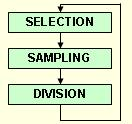

About the Implementation
The design issues addressed in VTDIRECT95 include algorithm modifications, data structures, parallel schemes, and error handling. Advanced features (derived data types, pointers, dynamic memory allocation, etc.) supplied by FORTRAN 95 were used to design dynamic data structures that flexibly organize the data on a single machine, effectively reduce the local data storage, and efficiently share the data across multiple processors. Moreover, a multilevel functional and data parallelism is proposed to produce multiple starting points, mitigate the data dependency, and improve the load balancing. In addition, both the serial and parallel programs are equipped with checkpointing features to provide fault tolerance to power outage or hardware/memory failures, and enable hot restarts for large runs.
Algorithm Modifications: DIRECT's behavior in multiple dimensions can be viewed as taking steps in potentially optimal directions within the entire design space. The potentially optimal directions are determined through evaluating the objective function at center points of the subdivided regions. The search is carried out through three essential operations: region selection (SELECTION), point sampling (SAMPLING), and space division (DIVISION). A few modifications were made in VTDIRECT95 to meet the needs of various applications and improve the performance on large scale parallel systems [13] [14].
Data Structures: One of the biggest design challenges of DIRECT is to break the "curse of dimensionality" first noted by its creators. The approach here is to design dynamic data structures that are easily extensible to store continuously generated data from point sampling/space division and to share the data storage among multiple processors. The original design of the data structures is reported in [2] and [13], documented for the serial implementation previously named as VTDIRECT. The design used in VTDIRECT95 has been improved by adopting a min-heap data structure and a memory reduction technique [1][14].
Parallel Schemes: The functional flow of DIRECT exposes its inherent sequential nature. The data dependency among the algorithm steps suggests a multilevel parallelism for SELECTION and SAMPLING. The parallel scheme for SELECTION concentrates on distributing data among multiple masters to share the memory burden. The data-distributed scheme naturally parallelizes the convex hull computation by merging multiple local convex hulls to a global one. Differently for SAMPLING, a functional parallelism distributes function evaluation tasks to workers. Nevertheless, function evaluations should be computed locally on masters if the evaluation cost is cheaper than the communication round trip cost. This is called the "horizontal scheme" (multiple masters without workers) to contrast with the "vertical scheme" (one master and multiple workers) [10].
Error Handling: Program robustness requires error handling that anticipates, detects, and resolves errors at run time. The highest level of error handling capability is fault tolerance that attempts to recover from hardware or operating system failures if possible, and if not, terminates the program gracefully. The tradeoff for fault tolerance is increased program complexity. The errors encountered in VTDIRECT95 come from several sources, including input parameters, memory allocation, files, MPI library, and hardware/power failure, etc. The error handling strategies here aim at balancing potential computation loss with implementation complexity. Therefore, simple fault tolerance features are considered only for recovering from some of the input parameter errors. The remaining errors are regarded as fatal errors, which are handled by checkpointing to save the computation as much as possible for later recovery [1][14].